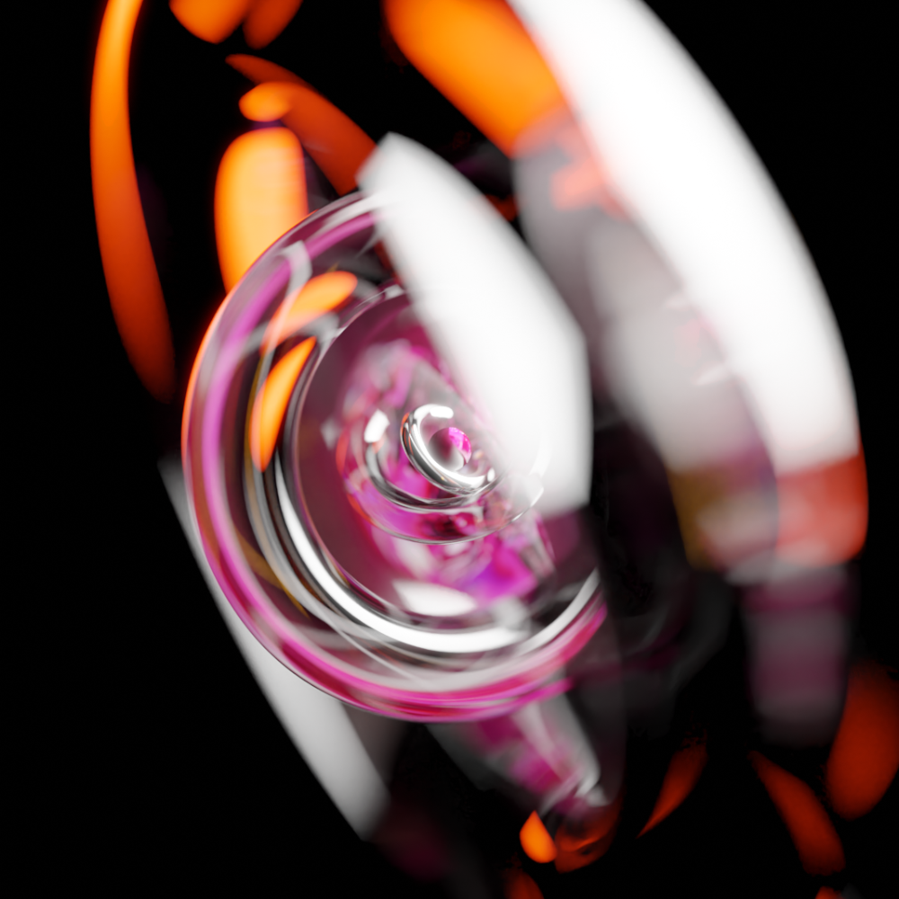

About
 The INFTC (International NFT Competition) is an online event designed and orchestrated by Deeper Flows an "art" lover and NFT Community member. α Prod's artistic journey started when performing his first oil paintings as a child. The most memorable one being a lion. When a visitor saw that lion, she asked "It is a grandmother"? A few years later, he went through several stages, using pencil drawing to draw houses and planes, before he developed a disgust for "gouache", as it was the forced technique at art classes in mid-school. His fascination for computers lead him to create both generative arts (Z = F(X,Y) mathematical curves), and ray-tracing.Years later, a strong need to reconnect to serenity led him to explore Latin calligraphy, as well as pencil sketching, with a recurrent theme : spheres. Since then, he has deepened his taste for 3D by diving into the Blender ocean, and given a try to Acrylic, for several experimental and abstract art projects.
Aside from these styles, α Prod is a fan of digital photography and teaches various techniques (some he has invented) during workshops.
After discovering the NFT Community in 2021, he realized that NFTs where more about connecting, getting inspired and collaborating together, than about selling what we create. This realization, taken further, made him plan and launch the International NFT Competition, an online competition where NFT creators from all over the world can submit a creation and have it evaluated by a jury of NFT Artists curated by α Prod.
"Sponsor NFTs" will be available for those who would like to support this initiative. They will be created specifically for this event, and collectable with no gas fees. Stay tuned!